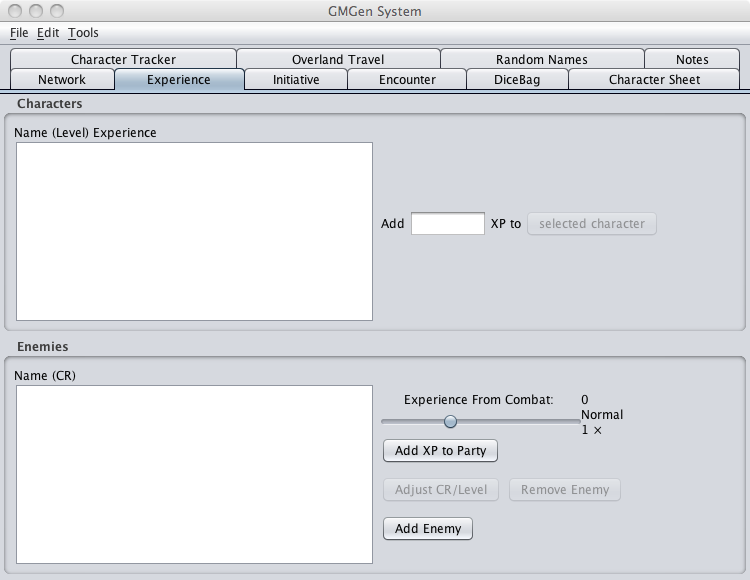
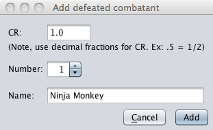

The Experience Tab enables you to calculate experience and award it to characters after combat.

The Experience Tab provides several options for calculating and awarding experience points. Perhaps the simplest method is to enter an amount of EP in the "Experience to Add:" field on the top right side of the tab, select one or more characters in the characters window on the top left side of the tab and click the "Add Experience to Character" button. This will add the specified amount of EP to the characters in PCGen as well as add an asterisk beside the characters name in the Characters Tab indicating that there have are unsaved changes.
A more involved method works in conjunction with the Initiative Tab. When combatants designated as Enemies are killed they will appear in the Enemies window on the lower left side of the Tab. The creatures Challenge Rating is displayed in parentheses next to their name. "Experience From Combat" to the right of the Enemies window displays the total amount of experience points generated from all the combatants in the Enemies window. The slider just below the total allows you to increase or decrease the total in relation to how difficult of easy the encounter may have been for the party. You may change the CR ratings of Enemies by selecting any number of them and clicking the "Adjust CR/Level" button. only whole numbers may be entered. You may remove Enemies from the list by selecting any number of them and clicking the "Remove Enemy" button. You may add additional enemies to the list by clicking the "Add Enemy" button.

Set the Challenge rating for the Enemy, the number you wish to add to the list, the name of the enemy and click Save. When you have added your enemies to the list the "Experience From Combat" will be updated to reflect the changes.
Once you are satisfied with the Enemies list you can award the experience to the party by clicking the "Add Experience to Party" button. This will divide the total experience by the number of characters in the character window and add an equal amount to each.